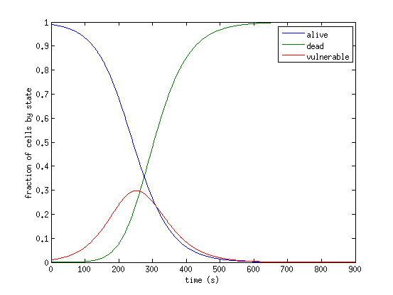

The model is capable of capturing the viability of cells in culture exposed to ablative temperatures. Parameters should be derived for specific cell types and tissues if possible.
ABSTRACT: Thermal treatments for tissue ablation rely upon the heating of cells past a threshold beyond which the cells are considered destroyed, denatured, or killed. In this article, a novel three-state model for cell death is proposed where there exists a vulnerable state positioned between the alive and dead states used in a number of existing cell death models. Proposed rate coefficients include temperature dependence and the model is fitted to experimental data of heated co-cultures of hepatocytes and lung fibroblasts with very small RMS error. The experimental data utilized include further reductions in cell viabilities over 24 and 48 h post-heating and these data are used to extend the three-state model to account for slow cell death. For the two cell lines employed in the experimental data, the three parameters for fast cell death appear to be linearly increasing with % content of lung fibroblast, while the sparse nature of the data did not indicate any co-culture make-up dependence for the parameters for slow cell death. A critical post-heating cell viability threshold is proposed beyond which cells progress to death; and these results are of practical importance with potential for more accurate prediction of cell death.
CITATION: O'Neill, D. P., Peng, T., Stiegler, P., Mayrhauser, U., Koestenbauer, S., Tscheliessnigg, K., & Payne, S. J. (2011). A three-state mathematical model of hyperthermic cell death. Annals of Biomedical Engineering, 39(1), 570-9. doi:10.1007/s10439-010-0177-1
|  |
| Solution of the cell death model for constant heating at 85°C with the parameters suggested in Table 2 of the publication. |
Cells exposed to ablative temperatures are assumed to be in one of three states: alive, vulnerable or dead. This is based on direct observations of cells during and after exposure to elevated temperatures. The rates at which cells transition between alive and vulnerable, and towards death are determined by fitting the model to data collected during cell culture experiments. This model has been coupled to the bioheat equation, and solved for patient specific geometries, to predict the outcome of ablation procedures.